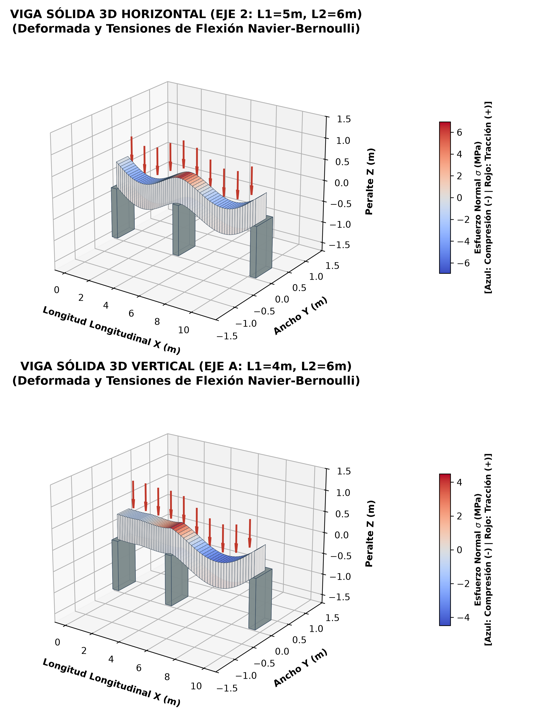
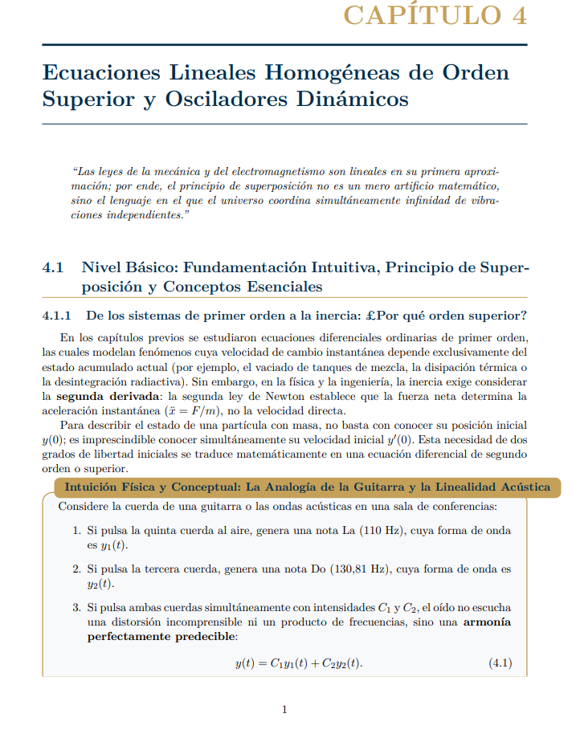

Simulaciones estructurales y físicas en Python con código documentado, maquetación editorial en LaTeX de estándar universitario y diapositivas ejecutivas para sustentación de tesis.
Servicios Técnicos Diseñados para Exigencias Reales
Gráficos 2D/3D con NumPy, SciPy y Matplotlib. Diagramas de fuerza cortante, momento flector, elástica y planos de deformación Navier-Bernoulli.
Compendios, guías de práctica y artículos con tipografía formal, `tcolorbox`, fórmulas complejas, tablas sin líneas verticales y normas APA 7 / IEEE.
Estructuración visual para defensas de tesis e informes de titulación. Cero párrafos apelmazados: síntesis visual, diagramas de flujo y Beamer / PPT sobrio.
Muestras Reales de Ejecución Técnica
Haz clic en cualquiera de las imágenes en formato 3:4 para verla ampliada en alta resolución.
Desarrollo de script computacional para el cálculo de esfuerzos axiales y flexión en vigas empotradas bajo cargas distribuidas. Generación automática del plano de tensiones \(\sigma(x, y)\) con colormap de alta precisión y exportación vectorial sin pixelado.


Diagramación desde notas manuscritas o borradores en Word hacia un compendio de publicación formal. Inclusión de cajas de teoremas customizadas (`tcolorbox`), numeración automática de capítulos, tablas en formato estricto APA 7 y enlaces hipertextuales cruzados.
Cómo Trabajamos Tu Entrega
Nos envías la consigna, datos del problema o apuntes por WhatsApp. Evaluamos alcance y tiempo.
Sin sorpresas ni cobros ocultos. Se pacta precio cerrado, fecha exacta de entrega y 50% de anticipo.
Generación de scripts, compilación de PDFs y envío de vistas previas con capturas de validación.
Entrega final del código fuente y archivos listos para imprimir o sustentar, con soporte para consultas.
Preguntas Frecuentes
Sí. Siempre recibirás el script `.py` o notebook `.ipynb` con comentarios detallados para que puedas explicar la lógica matemática al docente o jurado.
Sí, atendemos solicitudes de emergencia previo acuerdo y disponibilidad de agenda, manteniendo el mismo estándar de calidad técnica.
Aceptamos Yape, Plin y pronto PayPal para pagos internacionales.
No arriesgues tu calificación con documentos mal formateados o código que falla en plena exposición. Cotiza hoy mismo tu entrega con Daro Tec.